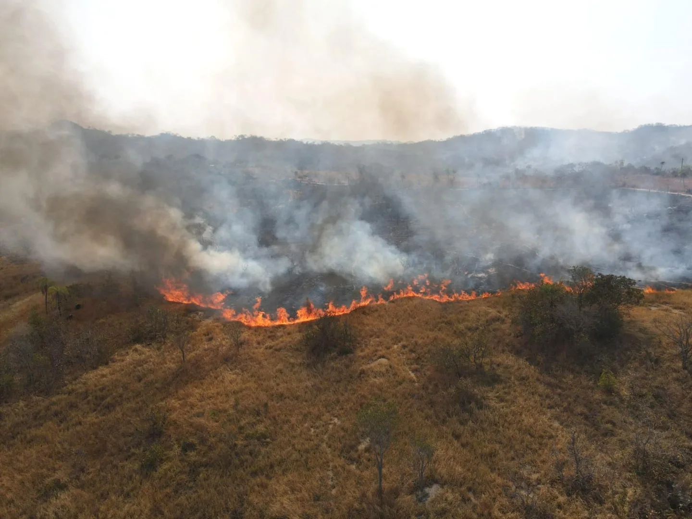
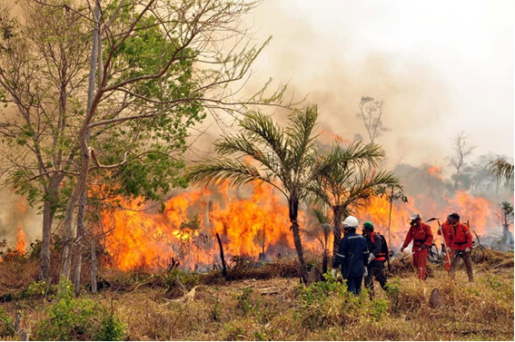
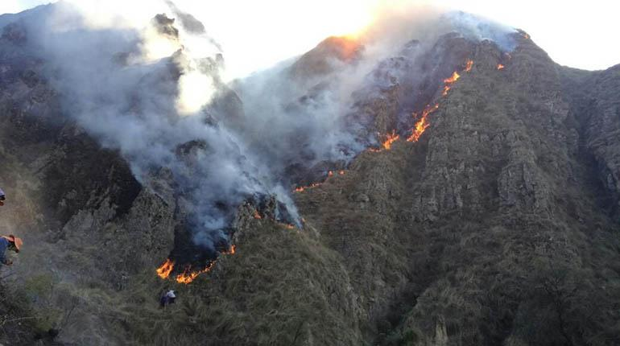

Proyectos Destacados

Reforestación en Santa Cruz
Los incendios han devastado miles de hectáreas en la Amazonía boliviana, dejando un paisaje desolador. Con tu donación, podemos plantar árboles y recuperar este ecosistema crucial para el planeta.

Bosques Chiquitanos
El fuego ha afectado a numerosas comunidades y especies únicas en esta región. Este proyecto busca restaurar los bosques nativos y apoyar a las familias locales que dependen de ellos.

Reforestación en Tarija
La deforestación ha causado un impacto irreversible en Tarija. Con tu ayuda, podemos restaurar las áreas afectadas, proteger las cuencas hidrográficas y garantizar un futuro sostenible.